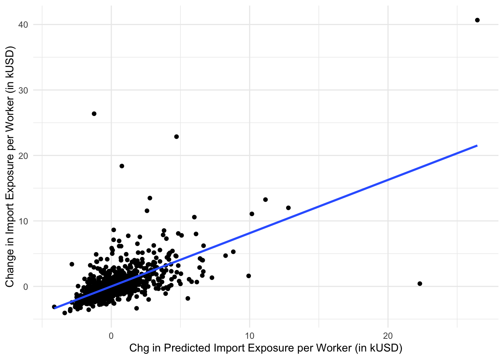

\(\Delta M_{ucjt}\) is the growth in overall imports from China to the US in industry \(j\)
\(L_{it}\) is total employment in local labor market \(i\) at the start of period \(t\)
\(L_{ijt}\) is total employment in market \(i\) in industry \(j\) at the start of period \(t\)
\(L_{ujt}\) is total employment in the US in industry \(j\) at the start of period \(t\)
In words: market \(i\)’s per worker exposure is proportional to a weighted average of the national growth in imports for each industry \(j\), where the weights are the fraction of market \(i\)’s industrial employment dedicated to \(j\). So, local markets where existing employment is highly reliant on industries for which Chinese imports are growing more are more exposed to the trade shock.
The authors estimate a series of specifications of the form:
\[ \Delta Y_{it} = \gamma_{t} + \beta_{1}\Delta IPW_{uit} + \mathbf{X}_{it}'\beta_{2} + e_{it} \] where \(Y\) are the outcomes of interest. One issue is that changes in import penetration could be a function of both supply and demand shocks, which would have different impacts on employment and wages. To isolate the portion of the change in import competition that is due to the supply side, the authors construct an instrumental variable:
\(\Delta M_{oct}\) is the change in China’s exports to other high income countries.
\(L_{ijt-1}\) is lagged employment and so on.
The first substitution is to isolate supply side factors driving increases in China’s exports, while the second is to protect against the possibility that current employment shares may be determined in anticipation of future import competition.
I downloaded the data from the AER’s replication files. The original data are in stata format, which we can read in as follows:
library(tidyverse)
── Attaching core tidyverse packages ──────────────────────── tidyverse 2.0.0 ──
✔ dplyr 1.1.4 ✔ readr 2.1.5
✔ forcats 1.0.0 ✔ stringr 1.5.1
✔ ggplot2 3.5.0 ✔ tibble 3.2.1
✔ lubridate 1.9.3 ✔ tidyr 1.3.1
✔ purrr 1.0.2
── Conflicts ────────────────────────────────────────── tidyverse_conflicts() ──
✖ dplyr::filter() masks stats::filter()
✖ dplyr::lag() masks stats::lag()
ℹ Use the conflicted package (<http://conflicted.r-lib.org/>) to force all conflicts to become errors
d <- readstata13::read.dta13("../data/workfile_china.dta")
There are lots of variables in here, but the replication materials provide a guide.
3 - Some Graphical Analysis
Figure 2 Panel A in the paper shows how the instrument (“change in predicted import exposure”) correlates with the endogenous variable (“change in import exposure”), controlling for the lagged share of manufacturing employment (which will be one of the controls in \(\mathbf{X}_{it}\). The graph shows the strength of the instrument. Panel B of the figure shows how the instrument itself predicts changes in manufacturing employment (the so-called “reduced form”), which you will replicate in your homework.
mod_trade <-lm(d_tradeusch_pw ~ l_shind_manuf_cbp, weights = timepwt48,d)mod_IV <-lm(d_tradeotch_pw_lag ~ l_shind_manuf_cbp,weights = timepwt48,d)d$resid_trade <-residuals(mod_trade)d$resid_IV <-residuals(mod_IV)ggplot(d,aes(x=resid_IV,y=resid_trade)) +geom_point() +geom_smooth(method ="lm", se =FALSE) +xlab("Chg in Predicted Import Exposure per Worker (in kUSD)") +ylab("Change in Import Exposure per Worker (in kUSD)") +theme_minimal()
`geom_smooth()` using formula = 'y ~ x'

4 - Analysis on Employment (Tables 2 and 3)
The first three columns of Table 2 show TSLS estimates of the effect of increases in trade exposure on manufacturing employment using different periods of data in a basic model without controls. We will see how to implement TSLS in the fixest package by replicating the first three columns. Some notes:
change in manufacturing is given by the variable d_sh_emlp_mfg
the change in import exposure is d_tradeusch_pw
the predicted change given global trends (the instrument) is d_tradeotch_pw_lag
local labor markets are defined at the commuting zone level, and so each observation in the regressions is weighted using population share of the CZ, given by timepwt48
TSLS estimation, Dep. Var.: d_sh_empl_mfg, Endo.: d_tradeusch_pw, Instr.: d_tradeotch_pw_lag
Second stage: Dep. Var.: d_sh_empl_mfg
Observations: 722
Weights: timepwt48
Standard-errors: Clustered (statefip)
Estimate Std. Error t value Pr(>|t|)
(Intercept) -0.846013 0.258465 -3.27322 1.9982e-03 **
fit_d_tradeusch_pw -0.718382 0.064980 -11.05551 1.1385e-14 ***
---
Signif. codes: 0 '***' 0.001 '**' 0.01 '*' 0.05 '.' 0.1 ' ' 1
RMSE: 0.061999 Adj. R2: 0.137885
F-test (1st stage), d_tradeusch_pw: stat = 580.8, p < 2.2e-16, on 1 and 720 DoF.
Wu-Hausman: stat = 84.9, p < 2.2e-16, on 1 and 719 DoF.
Column (3) uses both the change from 1990-2000 and the change from 2000 to 2007, which allows us to add a time fixed effect to the regression. Now how this changes how we write the formula to add a year effect below:
TSLS estimation, Dep. Var.: d_sh_empl_mfg, Endo.: d_tradeusch_pw, Instr.: d_tradeotch_pw_lag
Second stage: Dep. Var.: d_sh_empl_mfg
Observations: 1,444
Weights: timepwt48
Fixed-effects: yr: 2
Standard-errors: Clustered (statefip)
Estimate Std. Error t value Pr(>|t|)
fit_d_tradeusch_pw -0.74603 0.068807 -10.8424 2.2079e-14 ***
---
Signif. codes: 0 '***' 0.001 '**' 0.01 '*' 0.05 '.' 0.1 ' ' 1
RMSE: 0.062748 Adj. R2: 0.065058
Within R2: 0.031189
F-test (1st stage), d_tradeusch_pw: stat = 1,147.0, p < 2.2e-16, on 1 and 1,441 DoF.
Wu-Hausman: stat = 152.6, p < 2.2e-16, on 1 and 1,440 DoF.
Table (3) in the paper augments this analysis by including controls (\(\mathbf{X}_{it}\)) that in theory can weaken the required assumptions on the instrument and test for robustness of the results. For example, each of columns (2-6) includes a control for the share of manufacturing in a CZ’s start-of-period employment (l_shind_manuf_cbp). From the paper: “This specification further addresses the concern that the China exposure variable may in part be picking up an overall trend decline in US manufacturing rather than the component that is due to differences across manufacturing industries in their exposure to rising Chinese competition.”
Column (4) includes this variable on top of a measure of the percent of the working population in the CZ with college education (l_sh_popedu_c), the share of the CZ who are foreign born (l_sh_popfborn), the employment rate among women (l_sh_empl_f) on top of time dummies and census division fixed effects.
# note: the census division itself is not available, only dummies for each division, which are the reg_* variables we add to the formula above
5 - Other Outcomes
Tables (4) through (9) in the paper show the effect of changes in import competition on other important outcomes using the same basic IV approach. In your final homework you will be asked to replicate some of these results using the same dataset.